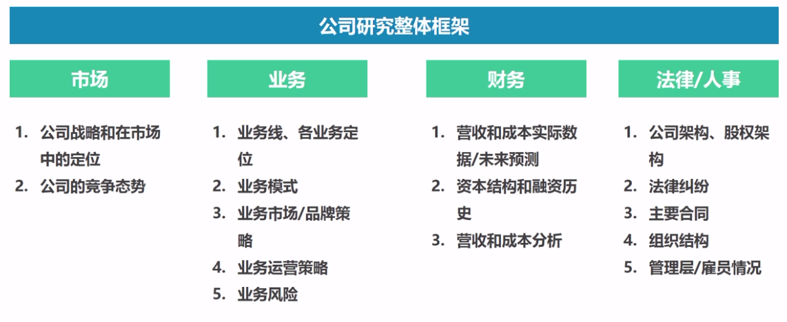

F.进行研究：公司研究
1.公司研究的整体框架

2.业务：业务线与业务线定位，梳理公司业务线Pipeline，以及业务线的定位市场、用户及用户需求

3.商业模式/盈利模式，业务的商业模式研究同行业的商业模式研究，只不过行业的商业模式研究是对多个公司商业模式的归纳


4.财务：公司周报分析


5.公司融资


四、商业分析（下）：解决不同产品发展阶段中的问题
A.概念期产品面临的主要问题及解决方法（上）
1.互联网产品的发展周期

2.概念期产品的典型孵化流程

3.概念期产品中的关键问题

B.概念期产品面临的主要问题及解决方法（下）
1.产品的愿景是什么？


2.产品定位领域的潜在市场规模是多少？


3.这个市场是一个蓝海/红海市场？竞争状况如何？


4.市场进入策略是什么？如何建立起市场壁垒？


5.定位模式的潜在盈利能力如何？


6.是否存在重大的风险因素？

C.发展期产品面临的主要问题及解决方法
1.发展期产品面临的主要问题

2.如何以更低的成本获取单位用户？


3.提高用户的留存？


4.如何更有效的复制单一市场的成功到新市场中？


5.如何扩展产品的网络效应？

6.进行横向扩张？


D.成熟期产品面临的主要问题及解决方法
1.成熟期产品所面临的主要问题

2.如何保持现有的市场地位？

3.针对市场竞争者的反应采取对策？


4.提高用户的LTV？


5.在市场下的垂直细分领域是否存在成长空间？不同人群间是否还存在机会？

E.衰退期产品面临的主要问题及解决方法
1.衰退期产品面临的主要问题

2.积极寻求转型

3.用户价值最大化

4.退出市场